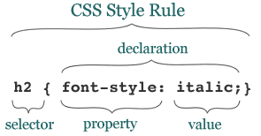

Uma folha de estilo em cascata
Se existe alguma coisa que caracteriza o que deu errado com a Web, é a proliferação da apresentação em detrimento da estrutura e conteúdo. ... Nós todos nos orgulhamos de nosso trabalho e queremos olhá-lo tão bom quanto pensamos que é. Já que a HTML nos deu muito pouco em termos de habilidades de apresentação interessantes, nós a forçamos para canais que queríamos viajar. Se tivéssemos bom estilo para começar, a corrupção dos fundamentos da Web não teria sido necessária.
Por isso a CSS é tão importante. Finalmente, não temos somente a habilidade de descrever apresentações sofisticadas, podemos fazê-la em relação a documentos bem estruturados e despojados. Chega de tortura de marcação! Somente elementos "limpos" que são exibidos atraentemente por meio da CSS.
Eric Meyer, "O Que Faz CSS Tão Bom?"
No desenvolvimento Web, as folhas de estilo em cascata (CSS) é uma linguagem de estilo usada para descrever a apresentação de um documento escrito em linguagem de marcação. Sua aplicação mais comum é estilizar páginas da Web escritas em HTML e XHTML.
CSS foi projetado primeiramente para possibilitar a separação do conteúdo do documento (escrito em HTML ou uma linguagem de marcação similar) da apresentação deste (escrito em CSS). Esta sepração pode melhorar a acessibilidade ao conteúdo, prover mais flexibilidade e controle na especificação de características da apresentação, e reduzir a complexidade e repetição na estrutura do conteúdo.
CSS pode também permitir a mesma página de marcação ser apresentada em diferentes estilos para diferentes métodos de visualização, tais como, tela, impressão, voz (quando lido por um browser baseado em discurso), Braille e dispositivos tácteis.
CSS especifica um esquema de prioridade para determinar quais regras de estilo se aplicam, caso mais de uma regra coincida com um determinado elemento. Neste esquema, também chamado cascata, as prioridades ou pesos são calculados e atribuídos às regras, para que os resultados sejam previsíveis.
As especificações CSS são mantidos pelo W3C (World Wide Web Consortium).
CSS possui uma sintaxe simples, e usa uma série de palavras chaves em Inglês para especificar os nomes das inúmeras propriedades de estilo. Uma folha de estilo consiste de uma lista de regras. Cada regra ou conjunto de regras consiste de um ou mais seletores e uma declaração em bloco que contém uma lista de declarações separadas por ponto-e-vírgula e entre chaves.
Seletores são usados para declarar quais elementos um estilo se aplica, o qual é um tipo de expressão de correspondência. Os seletores podem ser aplicados a todos os elementos de um tipo específico, ou somente aqueles que coincidem com um certo atributo (particularmente 'class' e 'id'). Elementos podem ser combinados, dependendo de como eles são colocados em relação ao outro no código de marcação, ou sobre a maneira como eles são aninhados dentro do modelo de objeto de documento.
Um conjunto de pseudo-classes pode ser usado para definir comportamento. Provavelmente o mais conhecido deles é: 'hover', que se aplica a um estilo somente quando o usuário 'aponta para' um elemento visível, geralmente mantendo pressionado o cursor do mouse sobre ele. Ele é acrescentado a um seletor como em a:hover ou #elementid:hover. Outras pseudo-classes em pseudo-elementos são, por exemplo, :first-line, :visited ou :before.
Declarações consistem de um par 'propriedade-valor' que define os atributos de apresentação que uma regra de estilo se aplica. As propriedades da CSS são definidas na especificação relevante. Elas tipicamente têm uma lista prédefinida de valores possíveis, que podem ser valores unitários (números, percentagens, pixels), valores de cor, URLs, e várias palavras chaves.
Declarações individuais dentro de uma regra de estilo são separadas por um 'ponto-e-vírgula'. As propriedades da declaração são correspondidas a seus valores com um 'dois pontos'. Certas propriedades abreviadas, tais como font, background, e margem, permitem múltiplos valores que tomam o lugar de propriedades mais específicas. Por exemplo, margin-top: 20px; margin-right: 10px; margin-bottom: 20px; margin-left: 10px; podem ser escritas como margin: 20px 10px; .
A informação do CSS poder ser fornecida por várias fontes. A informação do estilo CSS pode ser anexada como um documento separado ou incorporado no documento HTML. Várias folhas de estilo podem ser importadas, e folhas de estilo alternativas podem ser especificadas para que o usuário possa escolher entre elas. Estilos diferentes podem ser aplicados dependendo do dispositivo de saída usado; por exemplo, a versão da tela pode ser bem diferente da versão impressa, de modo que os autores possam adaptar a apresentação de forma adequada para cada mídia.
Os designers podem também fornecer folhas de estilo alternativas para o mesmo tipo de mídia que o usuário pode selecionar no navegador.